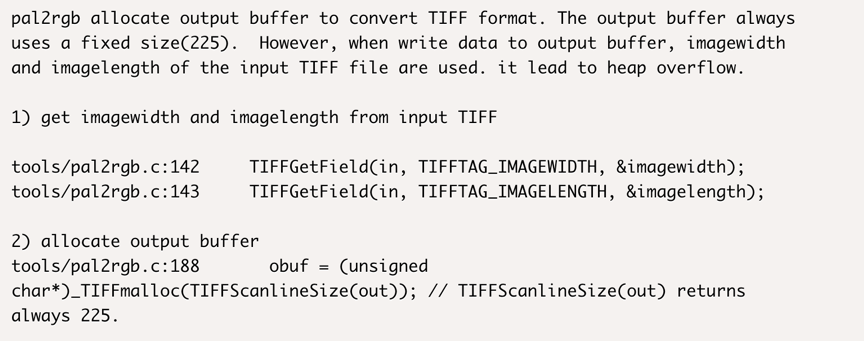
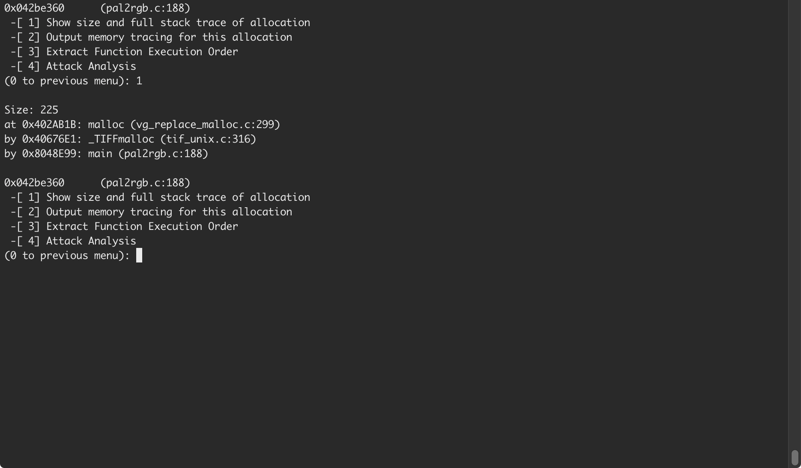
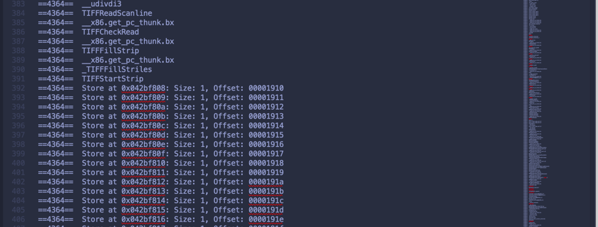
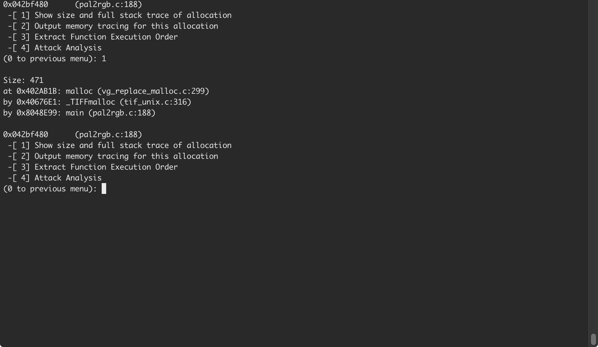
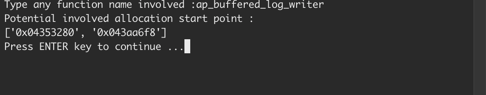
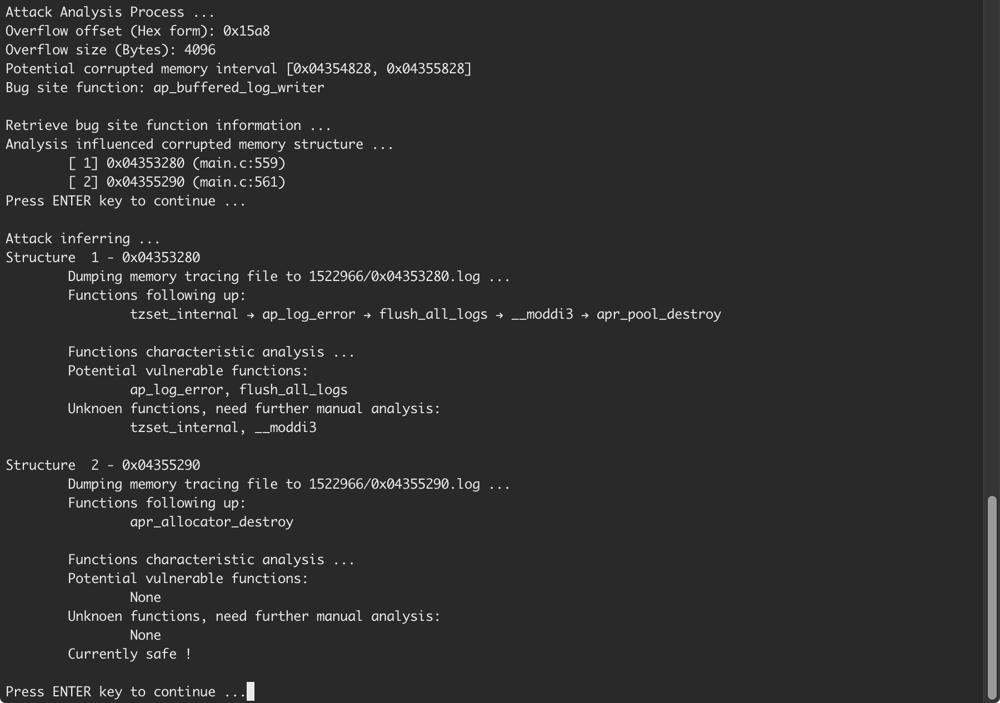

A Memory Tracing Tool and Attack Analysis Tool
First of all, Thank you so much for using this tool.
Cougar is a newest built tool, which works on the newest version of Valgrind. And it is easy for researchers and anyone else to use for testing and tracing corresponding memory without any prior knowledge and modification to your source code. Cougar will combine the functionalities of detection of allocation and deallocation during program running and provide memory tracing and function order for following execution. And also, Cougar could do the post-process attack analysis for you to make the memory exploring process much more easier. Cougar is mainly divided into three different major parts, Preload Allocation Replacement, Function Execution Order and Memory Tracing , and Post-process Memory Analysis.
You will need the following softwares to use this tool.
Cougar implements the foundation of memory tracing based on Valgrind, and invents a brand new plug-in called Memtrace to do the dirty work. Memtrace and Valgrind is easy to use in your program. Valgrind provides a virtual environment to execute your program. All you have to do is adding Memtrace and Valgrind execution statement as a prefix to your normal execution.
./valgrind --tool=memtrace ./your-execute-statement
Or you can use it with more options like this;
./valgrind --tool=memtrace --trace-all=no --trace-children=yes --log-file=logfile ./your-execute-statement
You can find the source code of Memtrace here. Memtrace Source Code.
First of all, create a new folder, memtrace, in the root source of Valgrind. And copy all the necessary files of Memtrace source code into that folder. Remember, we use mt, refers to memtrace, as its short prefix.
Edit Makefile.am in Valgrind root directory, adding the new directory memtrace to the TOOLS variables. It will be something as follows:
TOOLS = memcheck \
cachegrind \
callgrind \
massif \
lackey \
none \
helgrind \
drd \
memtrace
Edit configure.ac in Valgrind root directory, adding memtrace/Makefile, memtrace/tests/Makefile to the AC_OUTPUT list. It will be something as follows:
AC_OUTPUT([memtrace/Makefile memtrace/tests/Makefile])
Afterwards, run:
autogen.sh
./configure --prefix=`pwd`/inst
make && make install
It should automake, configure and compile without errors, putting memtrace in memtrace/ and inst/lib/valgrind/.
Once you have successfully obtained the output memory tracing LogFile. It's always messy and hard to interpret. So we have to parse the LogFile with a Python Parser to gain useful information and do the memory analysis.
The basic usage of Python Parser is shown as follows:
python mt_parser.py -f LogFile
More detailed option and information could be find using help option.
Usage: mt_parse.py [options]
Options:
-h, --help show this help message and exit
-f FILENAME, --file=FILENAME
load memory tracing data
-m MODULES, --module=MODULES
load specific allocation module sources from file
to filter (eg. main.c)
-s SAFELIST, --safe_function=SAFELIST
load safe functions from safe list
-t TARGETLIST, --target=TARGETLIST
load target allocation function sources from file
to filter (eg. malloc_init)
-v VULNERLIST, --vulnerable_function=VULNERLIST
load vulnerable functions from vulner list
-w WHITELIST, --whitelist=WHITELIST
load function white list
It’s hard for us to know the corresponding address of allocation in advance. Therefore, in order to do memory tracing, we have to manage the allocation function by ourselves.
It’s hard to simply read a bunch of memory access and trace log for any users. Therefore, point out the memory usage pattern under which specific function and the order of these functions will help users to interpret and understand the whole program running process.
It’s hard to filter and narrow pieces of memory to trace during runtime, since we have no prior knowledge of the exact address of particular structure. Therefore, the report of the whole program running might be hard to interpret at first glance.
The basic idea and roughly implementation detail of how to solve above-mentioned three research ideas.
Using a series of allocation and deallocation wrappers that replace original functions during program running. With these wrappers and proper functionalities inside, we can record and manage address and size of the allocation as we want, which will be helpful in the following part.
Function execution order provides the flow of memory access during program running. It helps to indicate when and where such memory piece is operated. Cooperated with the knowledge of corrupted places of execution, it can also narrow down possible functions that attack may happen.
Using post-process memory analysis, we can gain clearer information of each allocation. And we can filter out and generate separate report of function execution order and memory tracing for each allocation. Lastly, cut off unnecessary focus on some allocation.
Cougar is first evaluated with some normal real-life overflow exploitations. A sample could be LibTIFF pal2rgb 4.0.9 – Heap Buffer Overflow, CVE-2017-17095. The vulnerability is triggered by ./tools/pal2rgb $FILE /dev/null. It is reported that pal2rgb allocates output buffer too small to convert TIFF format at pal2rgb:188. The output buffer is said to be always fixed (225 bytes), causing an overflow when writing with actual image width and image length.
By using Cougar, we do successfully capture and track down the information of this specific allocation and its corresponding memory in the following execution.
 However, when we test this exploitation with Cougar, a question point is discovered. I found that the obuf is not fixed with 225 bytes as it’s said to be. When using files other than the POC file, LibTIFF could allocate obuf normally and ended up properly. Therefore, the POC file must be in a special case.
Even without any prior knowledge and learning of source code like I do, using Cougar could not only easily help detect, learn and investigate the real-life exploitation, but also obtain the related information and memory usage pattern as quick as an expert.
Cougar can be used not only in single threaded program as LibTIFF, but also heavy, large multi-threaded program even as Apache httpd server. All you have to do is start the server under previous mentioned command, and let Cougar do rest of the job. Here is a sample Apache-25520, a data race happened in httpd-2.0.48. This data race bug happens inside a function called ap_buffered_log_writer. The more detailed information called be found at bug database on Internet. When dealing with heavy program as Apache, Cougar may report with bunch of captured allocations. And at most time, it is hard for any of us to find out the exact allocation that is involved. Therefore, Cougar also provides a function analysis feature to help us narrow down the target.
Once you get the right allocation, you can do all the stuff around it including detailed allocation information, dumping all related memory operations and extracting whole function order. Besides all these functionalities, a pretty important feature is that it can also do a little bit of attack inferring specific to the overflow situations. With the overflow offset, overflow size and bug site input, it can automatically infer the involved corrupted memory address and infer the possible attack site. In the case of Apache-25520, the overflow offset is 0x15a8, with the size of 4096 bytes. The result could be shown as follows:
With this functionality, Cougar could infer the potential attack site and report you with a way more efficient report, telling you if exists vulnerable functions or not. In this case, vulnerable functions may involve ap_log_error and flush_all_logs. And the fact that there is a potential attack site inside flush_all_logs, as it loads a file descriptor inside corrupted memory area.
The time overhead is using Cougar's memory tracing module Memtrace comparing with Valgrind native tool Lackey. The first bar in blue is the LibTIFF original running time consumption. It is not so obvious since time consumption of memory analysis is usually multiple times of standard running. We can see that time consumption of trace-all option Memtrace is merely half of Lackey's. With the trace-part option, Memtrace is able to cut down time consumption further.
Same as previous, the time overhead is using Memtrace and Lackey. As for the Apache, the overhead testing includes start and stop process and the time consumption when dealing with different requests using httperf. Also, the first bar in blue is not so obvious for the same reason. Memtrace only uses half of time consumption compared to Lackey. And with trace-part option, Memtrace will cost least time among these.
{kind=link}
{kind=link}